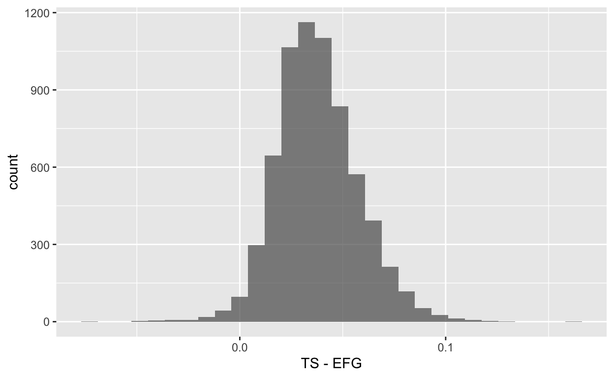

What Is Data Distillery Dash?
I take a research topic at random1, wrangle the data, I create a predictive model or two, and write up a blog post: all within 2 hours live on Twitch! All the words and code in this post were written during an ~2 hour livestream. If you want to come join the party, I plan on doing this on Thursdays from 3:30-5:30 EST here.
We Let R Choose the Research Topic!
Originally I was thinking of rolling a die, but since R can choose, we let it!
topics <- c("EFG vs. TS%","Off Rb% vs. Def Rb%","Turnover Chaos")
set.seed(23)
topic_is <- sample(topics, 1)
topic_is
[1] "EFG vs. TS%"What’s the Research Topic?
Alright, so based off of this we decided to predict the difference between true shooting percentage2 and effective field goal percentage3 for NBA players from 1999-2019.4 To make things more interesting/not overfit completely, we dropped any variables related to free throw shooting. We also dropped true shooting percentage and effective field goal percentage themselves, since those together would be redundant with our outcome of interest. First, let’s load in all the packages we’ll use during the livestream5
And now let’s use nbastatR to load in the advanced statistics and the total stats for all NBA players over ~20 years.
tic()
plan(multisession)
all_bref <- bref_players_stats(seasons = 2000:2019, tables = c("advanced","totals"), widen = TRUE, assign_to_environment = TRUE)
parsed http://www.basketball-reference.com/leagues/NBA_2000_advanced.html
parsed http://www.basketball-reference.com/leagues/NBA_2001_advanced.html
parsed http://www.basketball-reference.com/leagues/NBA_2002_advanced.html
parsed http://www.basketball-reference.com/leagues/NBA_2003_advanced.html
parsed http://www.basketball-reference.com/leagues/NBA_2004_advanced.html
parsed http://www.basketball-reference.com/leagues/NBA_2005_advanced.html
parsed http://www.basketball-reference.com/leagues/NBA_2006_advanced.html
parsed http://www.basketball-reference.com/leagues/NBA_2007_advanced.html
parsed http://www.basketball-reference.com/leagues/NBA_2008_advanced.html
parsed http://www.basketball-reference.com/leagues/NBA_2009_advanced.html
parsed http://www.basketball-reference.com/leagues/NBA_2010_advanced.html
parsed http://www.basketball-reference.com/leagues/NBA_2011_advanced.html
parsed http://www.basketball-reference.com/leagues/NBA_2012_advanced.html
parsed http://www.basketball-reference.com/leagues/NBA_2013_advanced.html
parsed http://www.basketball-reference.com/leagues/NBA_2014_advanced.html
parsed http://www.basketball-reference.com/leagues/NBA_2015_advanced.html
parsed http://www.basketball-reference.com/leagues/NBA_2016_advanced.html
parsed http://www.basketball-reference.com/leagues/NBA_2017_advanced.html
parsed http://www.basketball-reference.com/leagues/NBA_2018_advanced.html
parsed http://www.basketball-reference.com/leagues/NBA_2019_advanced.html
parsed http://www.basketball-reference.com/leagues/NBA_2000_totals.html
parsed http://www.basketball-reference.com/leagues/NBA_2001_totals.html
parsed http://www.basketball-reference.com/leagues/NBA_2002_totals.html
parsed http://www.basketball-reference.com/leagues/NBA_2003_totals.html
parsed http://www.basketball-reference.com/leagues/NBA_2004_totals.html
parsed http://www.basketball-reference.com/leagues/NBA_2005_totals.html
parsed http://www.basketball-reference.com/leagues/NBA_2006_totals.html
parsed http://www.basketball-reference.com/leagues/NBA_2007_totals.html
parsed http://www.basketball-reference.com/leagues/NBA_2008_totals.html
parsed http://www.basketball-reference.com/leagues/NBA_2009_totals.html
parsed http://www.basketball-reference.com/leagues/NBA_2010_totals.html
parsed http://www.basketball-reference.com/leagues/NBA_2011_totals.html
parsed http://www.basketball-reference.com/leagues/NBA_2012_totals.html
parsed http://www.basketball-reference.com/leagues/NBA_2013_totals.html
parsed http://www.basketball-reference.com/leagues/NBA_2014_totals.html
parsed http://www.basketball-reference.com/leagues/NBA_2015_totals.html
parsed http://www.basketball-reference.com/leagues/NBA_2016_totals.html
parsed http://www.basketball-reference.com/leagues/NBA_2017_totals.html
parsed http://www.basketball-reference.com/leagues/NBA_2018_totals.html
parsed http://www.basketball-reference.com/leagues/NBA_2019_totals.html
Advanced
Totalstoc()
52.825 sec elapsedHere Was My Initial Frantic Plan
Do data wrangling (Create target variable)
Get minimal model pipeline (Includes EDA)
Go back and iterate on modeling
TWIST6
Making more plots if we have time, and building out the rest of the blog post
Why Bother with This Question?
Even though true shooting percentage and effective field goal percentage are similar, looking at their differences might be informative. The main difference between the two, is true shooting percentage takes into account free throw percentage, while effective field goal percentage does not.
Still, the metrics are correlated r = 0.92 in our data!7 So the cases where they differ by a lot might be rare, but could be really interesting.
# A tibble: 2 x 3
term pct_true_shooting pct_efg
<chr> <dbl> <dbl>
1 pct_true_shooting NA 0.921
2 pct_efg 0.921 NA Who Has the Biggest Gaps Between True Shooting Percentage and Effective Field Goal Percentage?
We can also look at who has the biggest gaps between true shooting percentage and effective field goal percentage.
Folks who have a true shooting percentage much higher than their effective field goal percentage8 are much better free throw shooters than they are shooting from the field. Folks who have a much higher effective field goal percentage than true shooting percentage9 are much worse free throw shooters compared to how they shoot from the field.
It’s interesting to me that while the data goes through the 2018-2019 season, none of the top 10 discrepancies happen after the 2011-2012 season. Could just be chance for sure, but might be worth investigating further!
# A tibble: 10 x 3
name_player ts_minus_efg slug_season
<chr> <dbl> <chr>
1 Danny Fortson 0.16 2004-05
2 Kevin Ollie 0.133 2003-04
3 Tony Farmer 0.122 1999-00
4 Corey Maggette 0.121 2006-07
5 Kevin Ollie 0.12 2001-02
6 Kevin Ollie 0.118 2008-09
7 Corey Maggette 0.117 2004-05
8 Corey Maggette 0.112 2011-12
9 Charles Oakley 0.111 2002-03
10 Antonio Daniels 0.111 2005-06 Also, yikes is Deandre Jordan terrible at shooting free throws relative to how he shoots from the field! I know we already knew that, but still. He takes up the top 4 spots on the “true shooting percentage lower than effective field goal percentage” list, and 6 of the top 10 overall.
# A tibble: 10 x 3
name_player ts_minus_efg slug_season
<chr> <dbl> <chr>
1 DeAndre Jordan -0.0750 2015-16
2 DeAndre Jordan -0.0730 2014-15
3 DeAndre Jordan -0.0480 2008-09
4 DeAndre Jordan -0.0460 2013-14
5 Joey Dorsey -0.0450 2014-15
6 Andris Biedrins -0.0430 2005-06
7 Brendan Haywood -0.0420 2010-11
8 DeAndre Jordan -0.0410 2016-17
9 DeAndre Jordan -0.0380 2010-11
10 DeAndre Jordan -0.0370 2012-13 Is The Outcome Distributed in A Super Wonky Way?
Overall though, the difference between true shooting percentage and effective field goal percentage seems pretty normally distributed.
all_bref_wrang %>%
na.omit() %>%
ggplot(aes(x = ts_minus_efg)) +
labs(x = "TS - EFG") +
geom_histogram(alpha = 0.7)

Some EDA + Modeling Time
I then created a minimal modeling pipeline with the tidymodels framework! Shout out to Max Kuhn and Julia Silge + others at RStudio forever.
I also split the data into training and testing, though this post will only look at the model performance (via resampling) in the training data.
bref_pred <- all_bref_wrang %>%
dplyr::select(name_player, ts_minus_efg, c(minutes:pts_totals)) %>%
dplyr::select(-ftm_totals, -fta_totals,-pct_ft_rate,-pct_ft, -pct_true_shooting, -pct_efg)
# glimpse(bref_pred)
# It's SPLIT time
set.seed(33)
bref_split <- initial_split(bref_pred, prop = 4/5, strata = ts_minus_efg)
bref_train <- training(bref_split)
bref_test <- testing(bref_split)
I originally wrote code to look at all the univariate associations between the predictors (Basketball Reference Data for all the players over the past 20 years) and the outcome in the training data. This isn’t to do any screening, but helps me get a sense for how well a simple linear model might do. For example, if there were a bunch of strong positive/negative linear associations with the outcome, the linear regression might beat more sophisticated, compuationally intensive models. That happened a little bit here (spoilers!) and here’s an example of one plot.10
# preds <- bref_train %>%
# dplyr::select(where(is.numeric)) %>%
# names()
#
# map(preds, ~{
#
# bref_train %>%
# ggplot(aes(x = .data[[.x]], y = ts_minus_efg)) +
# geom_point(alpha = 0.2, position = "jitter") +
# geom_smooth(method = lm, formula = y ~ x, se = FALSE, col = "red")
#
# })
bref_train %>%
ggplot(aes(x = minutes, y = ts_minus_efg)) +
geom_point(alpha = 0.2, position = "jitter") +
geom_smooth(method = lm, formula = y ~ x, se = FALSE, col = "red") +
labs(y = "True Shooting % - EFG%")

Here come the recipes! Nope, the food I make isn’t tasty, but at least this recipe can take care of any missing data or near-zero variance predictors. I also decided to train a no-frills linear regression along with an out of the box boosted tree model.11
ts_efg_rec <- recipe(ts_minus_efg ~ ., data = bref_train) %>%
update_role(name_player, new_role = "id") %>%
step_impute_knn(all_numeric(), -all_outcomes()) %>%
step_normalize(all_numeric(), -all_outcomes()) %>%
step_nzv(all_numeric(),-all_outcomes())
ts_efg_rec %>%
prep(verbose = TRUE) %>%
bake(new_data = bref_train)
oper 1 step impute knn [training]
oper 2 step normalize [training]
oper 3 step nzv [training]
The retained training set is ~ 1.75 Mb in memory.# A tibble: 5,356 x 41
name_player minutes ratio_per pct3p_rate pct_orb pct_drb pct_trb
<fct> <dbl> <dbl> <dbl> <dbl> <dbl> <dbl>
1 Tariq Abdul-W… -0.126 -0.152 -0.988 -0.0205 -0.277 -0.0132
2 Shareef Abdur… 2.16 1.42 -0.794 0.0646 1.40 1.17
3 Ray Allen 1.95 1.52 0.263 -0.344 -0.730 -0.728
4 John Amaechi 0.0214 -0.248 -1.12 -0.276 -0.259 -0.326
5 Derek Anderson 0.739 0.634 -0.139 -0.285 -0.939 -0.795
6 Kenny Anderson 1.28 0.754 -0.0594 -0.421 -1.18 -1.15
7 Nick Anderson 0.591 -0.581 1.36 -0.268 -0.329 -0.371
8 Chris Anstey -0.919 0.205 -1.09 0.261 1.36 1.39
9 Darrell Armst… 1.28 1.25 0.621 -0.387 -1.06 -0.974
10 Chucky Atkins -0.0591 0.0384 -0.0743 -0.506 -1.32 -1.31
# … with 5,346 more rows, and 34 more variables: pct_ast <dbl>,
# pct_stl <dbl>, pct_blk <dbl>, pct_tov <dbl>, pct_usg <dbl>,
# ratio_ows <dbl>, ratio_dws <dbl>, ratio_ws <dbl>,
# ratio_ws_per48 <dbl>, ratio_obpm <dbl>, ratio_dbpm <dbl>,
# ratio_bpm <dbl>, ratio_vorp <dbl>, count_games_started <dbl>,
# pct_fg <dbl>, pct_fg3 <dbl>, pct_fg2 <dbl>, minutes_totals <dbl>,
# fgm_totals <dbl>, fga_totals <dbl>, fg3m_totals <dbl>,
# fg3a_totals <dbl>, fg2m_totals <dbl>, fg2a_totals <dbl>,
# orb_totals <dbl>, drb_totals <dbl>, trb_totals <dbl>,
# ast_totals <dbl>, stl_totals <dbl>, blk_totals <dbl>,
# tov_totals <dbl>, pf_totals <dbl>, pts_totals <dbl>,
# ts_minus_efg <dbl># It's peanut butter model time
lm_mod <- linear_reg() %>%
set_engine("lm")
xg_mod <- boost_tree() %>%
set_engine("xgboost") %>%
set_mode("regression")
# Working hard or harding workflowing
rec_list <- list(ts_efg_rec, ts_efg_rec)
mod_list <- list(lm_mod, xg_mod)
base_wfs <- map2(rec_list, mod_list, ~{
wf <-
workflow() %>%
add_recipe(.x) %>%
add_model(.y)
})
data_list <- list(bref_train, bref_train)
base_one <- map2(base_wfs, data_list, ~{
tic()
wf_fit <- fit(.x, data = .y)
toc()
wf_fit
})
0.556 sec elapsed
0.88 sec elapsedEvaluting the Models Using 10-Fold Cross-Validation
Then I evaluated both models using 10 fold cross-validation to make sure I’m not overfitting too much.12
# Resampling time!!
base_mod_rs <- map2(base_wfs, data_list, ~{
registerDoMC(cores = 7)
set.seed(33)
folds <- vfold_cv(.y, v = 10, repeats = 10, strata = ts_minus_efg)
keep_pred <- control_resamples(save_pred = TRUE)
tic()
set.seed(33)
fit_rs <-
.x %>%
fit_resamples(folds, control = keep_pred)
toc()
fit_rs
})
14.208 sec elapsed
16.943 sec elapsedHow Did the Models Do?
Both models did about the same as one another according to RMSE! That would make me prefere the simpler linear model, though I’m 100% sure these models could be improved. If I had more time, I would have done some tunining of the xgboost model, done some more visualizations to assist with feature engineering, and maybe even created some spicy memes.13
base_metrics <- map(base_mod_rs, ~{
.x %>%
collect_metrics(summarize = TRUE)
}) %>%
print()
[[1]]
# A tibble: 2 x 6
.metric .estimator mean n std_err .config
<chr> <chr> <dbl> <int> <dbl> <chr>
1 rmse standard 0.00925 100 0.0000399 Preprocessor1_Model1
2 rsq standard 0.778 100 0.00182 Preprocessor1_Model1
[[2]]
# A tibble: 2 x 6
.metric .estimator mean n std_err .config
<chr> <chr> <dbl> <int> <dbl> <chr>
1 rmse standard 0.0138 100 0.0000426 Preprocessor1_Model1
2 rsq standard 0.528 100 0.00297 Preprocessor1_Model1base_preds <- map(base_mod_rs, ~{
.x %>%
collect_predictions(summarize = TRUE)
}) %>%
print()
[[1]]
# A tibble: 5,356 x 4
.row ts_minus_efg .config .pred
<int> <dbl> <chr> <dbl>
1 1 0.051 Preprocessor1_Model1 0.0487
2 2 0.0700 Preprocessor1_Model1 0.0745
3 3 0.0540 Preprocessor1_Model1 0.0564
4 4 0.067 Preprocessor1_Model1 0.0682
5 5 0.0720 Preprocessor1_Model1 0.0695
6 6 0.0410 Preprocessor1_Model1 0.0470
7 7 0.00300 Preprocessor1_Model1 0.0113
8 8 0.068 Preprocessor1_Model1 0.0556
9 9 0.0480 Preprocessor1_Model1 0.0353
10 10 0.0270 Preprocessor1_Model1 0.0346
# … with 5,346 more rows
[[2]]
# A tibble: 5,356 x 4
.row ts_minus_efg .config .pred
<int> <dbl> <chr> <dbl>
1 1 0.051 Preprocessor1_Model1 0.0540
2 2 0.0700 Preprocessor1_Model1 0.0668
3 3 0.0540 Preprocessor1_Model1 0.0588
4 4 0.067 Preprocessor1_Model1 0.0580
5 5 0.0720 Preprocessor1_Model1 0.0587
6 6 0.0410 Preprocessor1_Model1 0.0500
7 7 0.00300 Preprocessor1_Model1 0.0288
8 8 0.068 Preprocessor1_Model1 0.0564
9 9 0.0480 Preprocessor1_Model1 0.0566
10 10 0.0270 Preprocessor1_Model1 0.0479
# … with 5,346 more rowsWe see the predictions primarily break down at the extreme ends of each distribution, though the boosted tree model starts breaking down even before then.
map(base_preds, ~{
.x %>%
ggplot(aes(x = .pred, y = ts_minus_efg)) +
geom_point(alpha = 0.2, position = "jitter")
}) %>%
print()
[[1]]
[[2]]
Final Thoughts
This was really fun! It came down to the wire for me to finish this post, but I had an absolute blast. I’m looking forward to doing this again. If you enjoyed this, come follow me on Twitch
Yikes↩︎
which takes into account free throw percentage along with giving people more credit for making 3s↩︎
which gives people more credit for making 3s but doesn’t give people credit for free throws↩︎
shout out to the nbastatR package for making getting that data easy↩︎
or almost all of them!↩︎
Just kidding, tune in next time to see if I remember to do it!↩︎
among players who played at least 500 minutes in a given season, total sample size across 20 years of 6,691 players↩︎
positive values by this metric↩︎
negative values by this metric↩︎
The commented out code creates all the plots↩︎
I know workflowsets exist, but I haven’t worked with them yet! Maybe next time…↩︎
Yes, I know there’s some controversey over how much k-fold cross-validation helps with that, but I’m doing what I know how to do!↩︎
shout out to Tony on Sliced, a competitive data science stream <twitch.tv/nickwan_datasci>↩︎